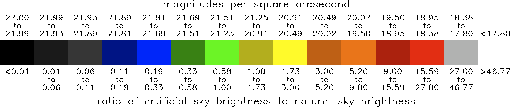

Expanded Color Scale
These maps have an expanded color scale. In Pierantonio Cinzano's original atlas, the zone boundaries are related by powers of three (except for the boundary between black and gray). Therefore, an expanded map with twice the number of zones should have zone boundaries that are a power of the square root of three. I expanded the color scheme by having two shades for each color--one dark and one light. Below is the new color scale. The units on the top are magnitudes per square arc-second and the units on the bottom are the ratio of artificial sky brightness to "natural sky brightness" (i.e. 2.0 => the artificial sky brightness is twice as bright as natural).
For more information contact:
David Lorenz
dlorenz@wisc.edu